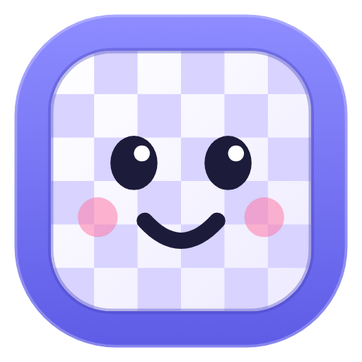

Native audio in and out, deciding which tool to call next
Legal moves, misheard-move repair, "move it there"
chess.jsThreats, best move arrows, move grades
Stockfish 19 · WASMPlays at your level, adapts as you improve
Stockfish 19 · WASM6 piece lessons, 280 puzzles, hint ladders
Lichess CC0 · curated bookProfile, saved games, weak spots, notes from past chats
Browser localStorage · on deviceSpeaks with no key and no server
Kokoro-82M in browserPulls your real chess.com games, checks every move with Stockfish, then writes a practice plan
chess.com API · Stockfish · Gemini 3.8 Flash via condense.chat proxy